外拍活动NO.006 | 35mm镜头下的盛泽老街
2026.08.04 · 摄影笔记 · 盛泽老街.苏州 · Rx1RM2
在近40℃的午后，盛泽老街没有刻意迎合游客的布置，只有临河的老屋、窄巷里的住户和缓慢流动的生活。第一次使用35mm定焦镜头扫街，在汗水里重新练习观察与等待。
刚过去的周六，随色友一起参加了一次外拍活动。
第一站：苏州盛泽老街。
难得这里还有大片的未经商业化的原住民老街，
很久没扫街了，开始热身练手，
气温直冲40度，大汗淋漓之余
仍然留下了一些难忘的瞬间。
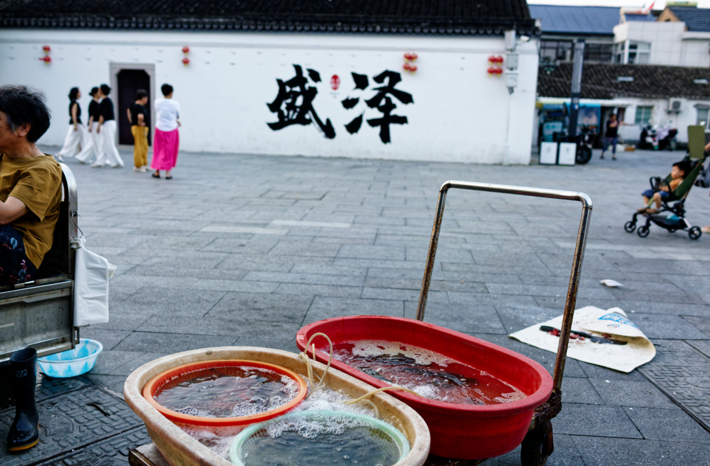
墙上的“盛泽”与前景卖鱼的水盆，右边坐在推车里的儿童和远处准备跳广场舞的妇女们，构成老街最寻常的夏日一角。
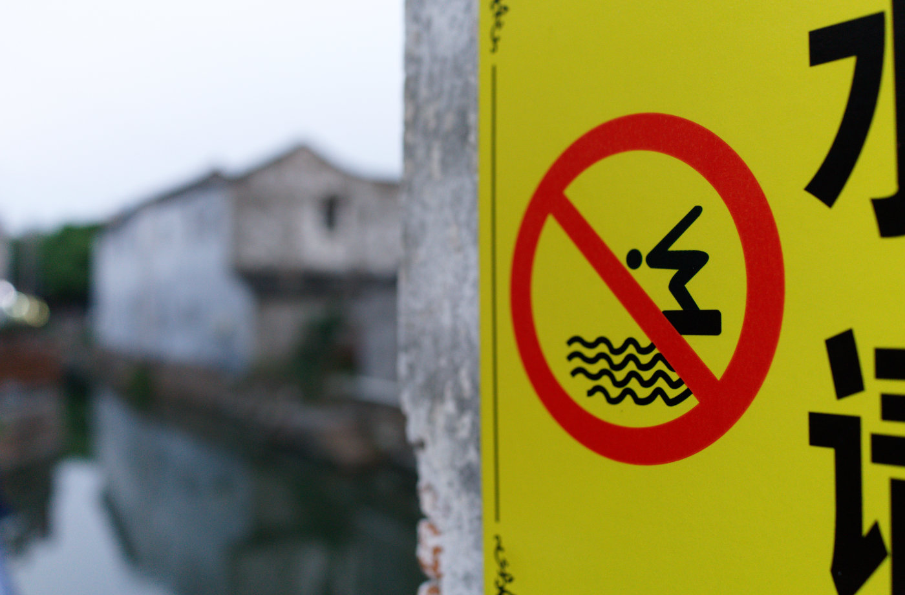
河道边的禁泳标识，把老街的水岸留在一片安静里。
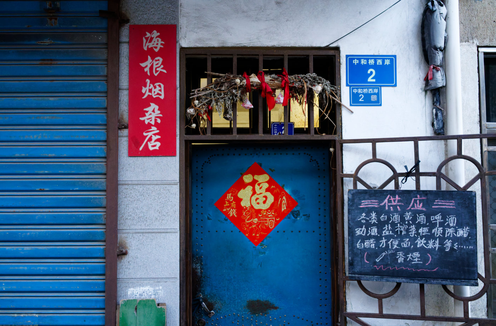
蓝色卷帘门、蓝色大门、手写供应商品，都是仍在使用的旧日常。
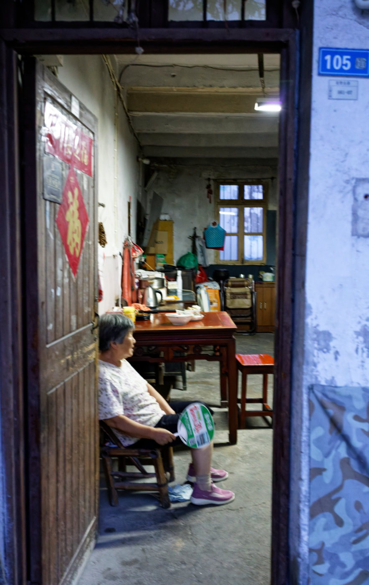
门半开着，老人坐在堂屋门口纳凉，屋里的生活一眼可见。虽然拍糊了，因为使用光圈优先，而快门只有1/25秒，但我仍然保留了这张照片。
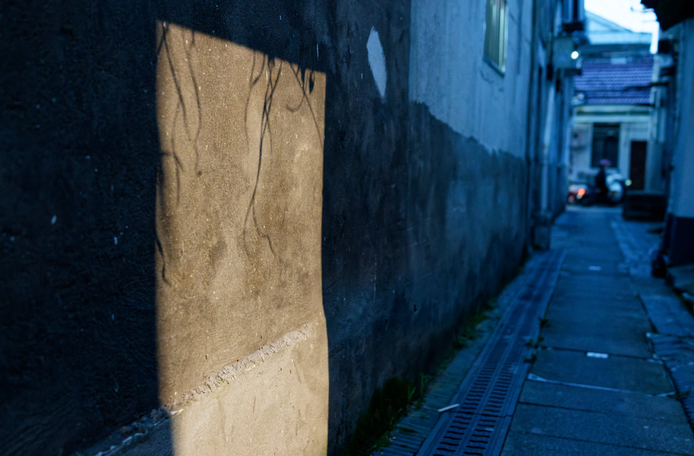
傍晚的阳光越过巷口，在斑驳墙面上留下一块温热的亮色。
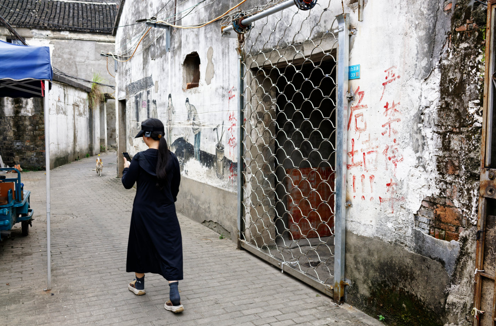
前面奔跑的狗与后面行走的女孩，老街并非静止的布景。
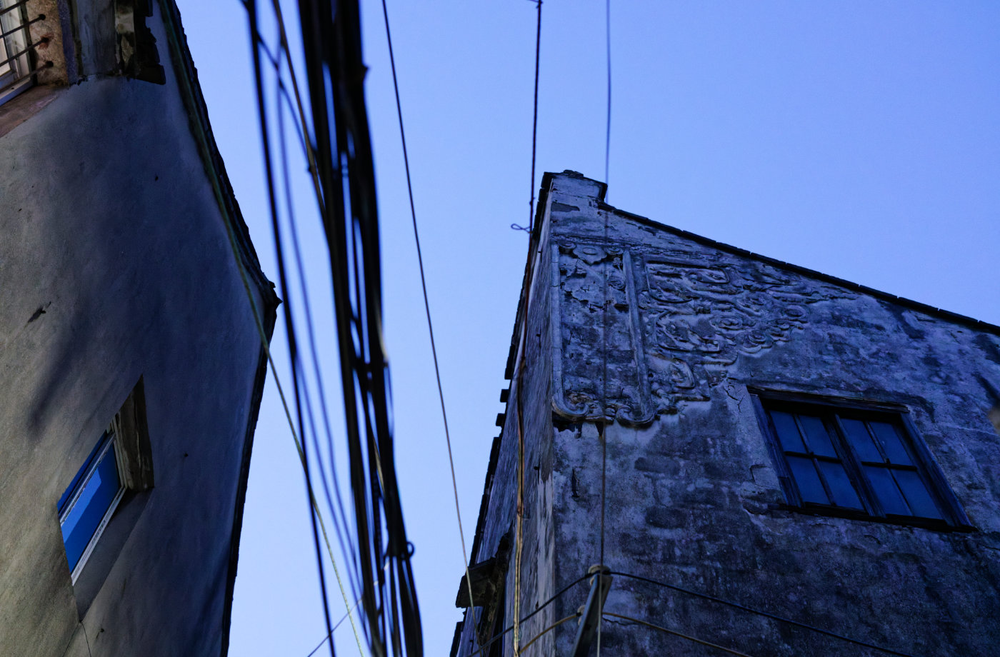
抬头是密集的电线与斑驳的山墙，精美的雕刻，仿佛时间在屋檐之间交错。
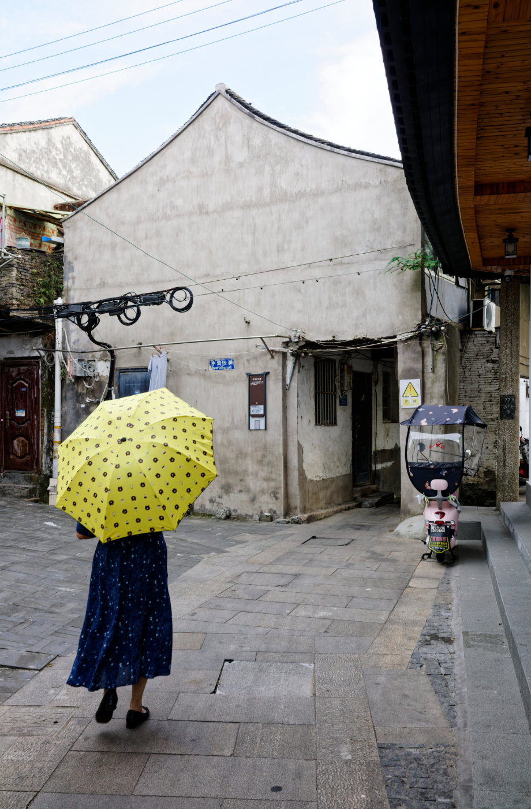
一把明黄的波点伞穿过灰白巷口，为阴天添了一点轻快。
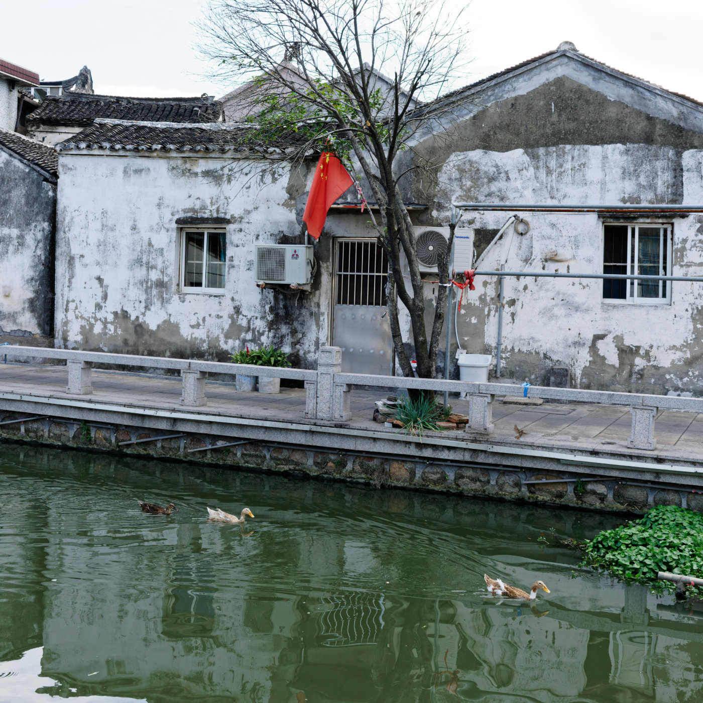
临河老屋前，几只鸭子划开水面，红旗在风里轻微飘荡。
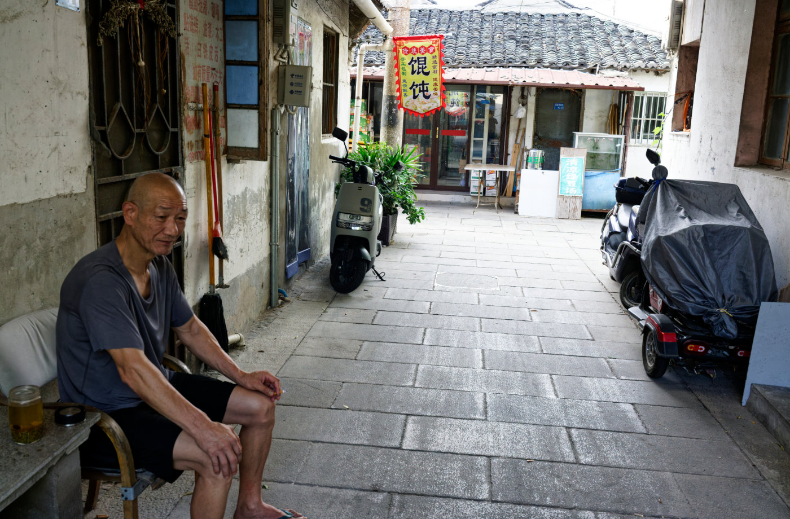
巷子尽头有人来往，门口坐着的老人安静地看着街面。
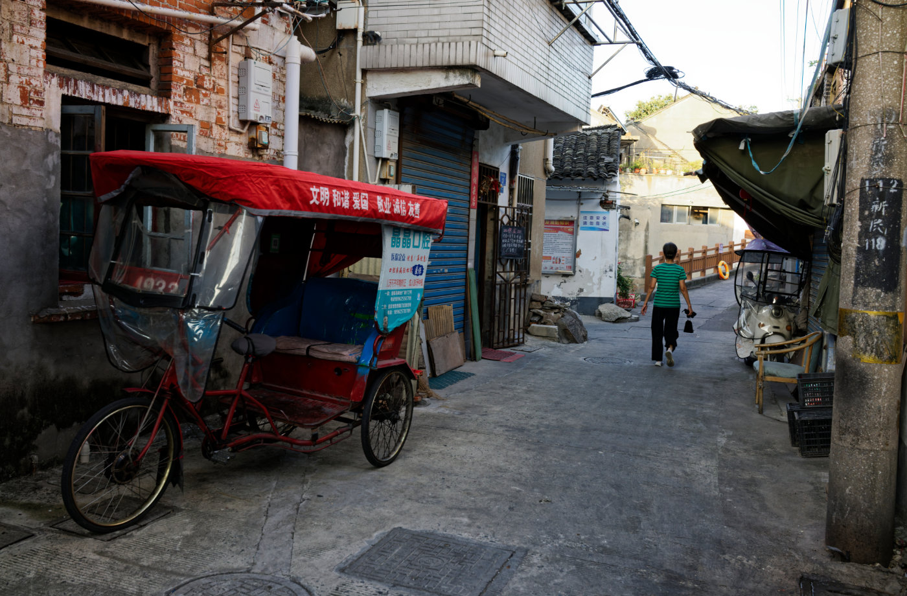
人力三轮车停在路边，窄巷仍保留着旧街区的出行节奏。
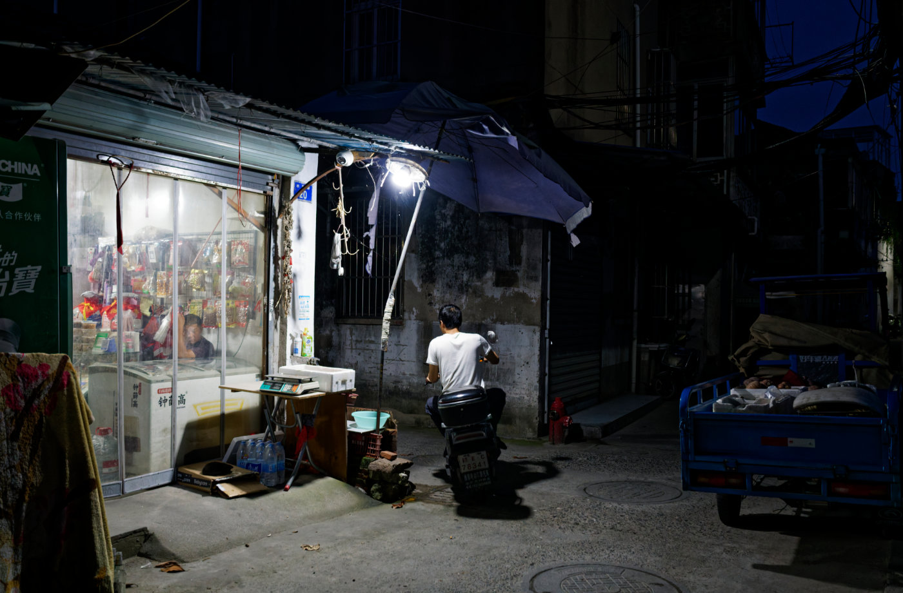
夜色落下后，小店的灯光照亮门前一小段街道。
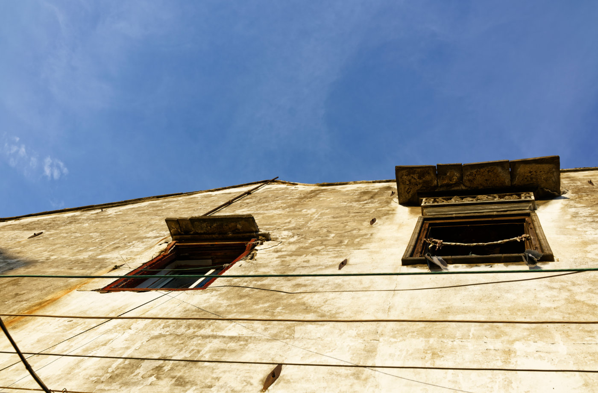
阳光落在老屋外墙，空着的窗框像一段没有说完的往事。
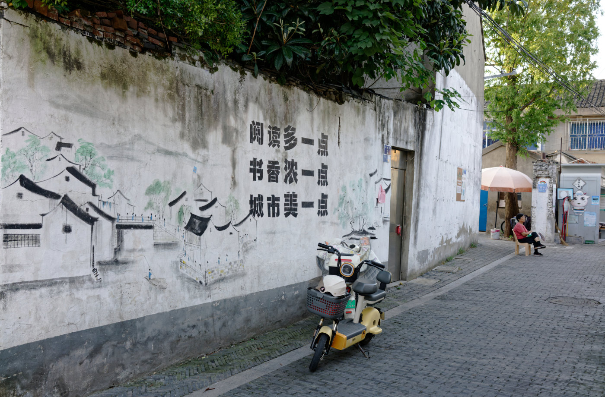
和着远处坐在屋前纳凉的老人，墙上的街巷图与“书香城”标语，在电动车旁慢慢褪色。
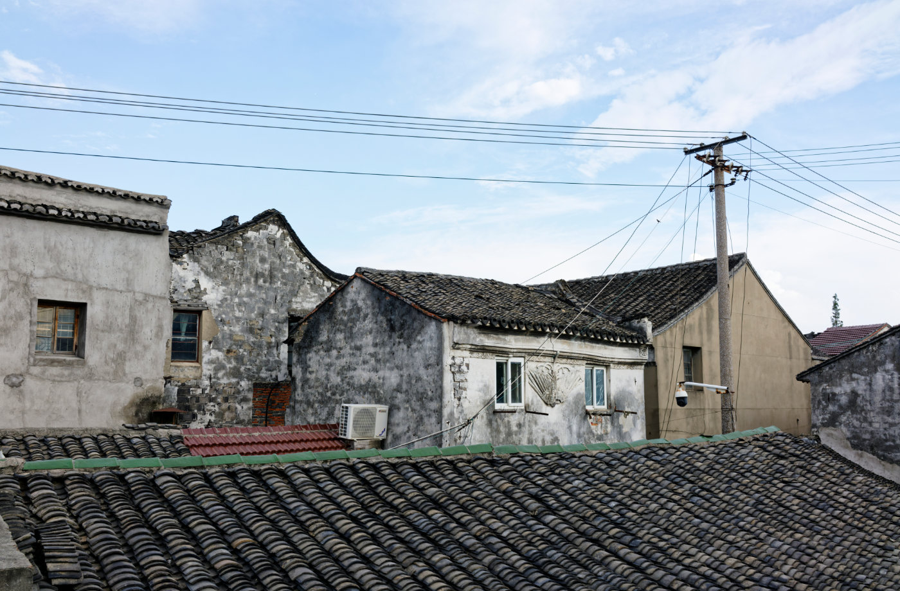
瓦屋顶层层铺开，远处的电线提醒着这里仍是正在生活的老街。